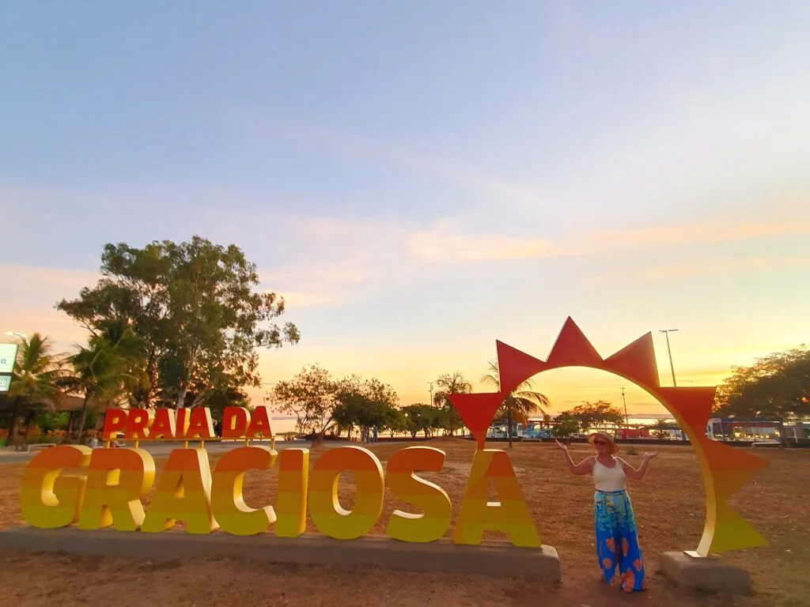
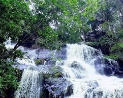
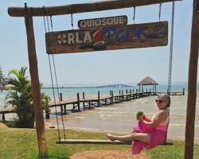

Palmas é a principal cidade do Tocantins e a caçula entre as capitais do Brasil, fundada somente em 1989,
sendo uma das poucas cidades brasileiras que são completamente planejadas e que eu tive o privilégio de
visitar.
Trata-se a porta de entrada mais fácil para quem pretende se aventurar no cerrado brasileiro e conhecer
as belezas do Jalapão, então cheguei um pouco antes e aproveitei para fazer alguns passeios pela capital
tocantinense.
Tripadvisor
Mesmo com pouco tempo para explorar o que fazer em Palmas em 2 dias, percebi que apesar de ser uma
cidade completamente planejada , ela não foi projetada para pedestres, talvez pelo extremo calor que faz
o ano inteiro, nesses últimos dias com máximas de 40°C.
Não vi um carro sequer com os vidros abertos! Só para ilustrar, a população tem feito manifestações, há
anos, para exigir ar-condicionado no transporte público.
Como tive um dia inteiro na cidade, pude conhecer a Praia da Graciosa, uma das principais áreas de lazer
e importante ponto turístico de Palmas, com quiosques e balsas que fazem passeios pelo Rio Tocantins; em
sequência, fiz um tour pelos outros pontos turísticos locais na Praça dos Girassóis (a maior da América
Latina) e posso te garantir que trata-se de um roteiro bastante agradável, somado a uma gastronomia
incrível.
No segundo dia, visitei a Ilha do Canela e o Parque Estadual do Lajeado, dois lugares que recomendo
demais para quem é amante da natureza.
Palmas é uma cidade muito agradável para se conhecer, porém não é preciso uma viagem muito longa para
visitar seus principais atrativos. Creio que em dois dias é possível fazer um bom roteiro na capital
tocantinense, mas se quiser é bem possível curtir o local por mais alguns dias.


TURISMO
TOCANTINS
© 2026 Turismo Tocantins - Todos os direitos reservados.